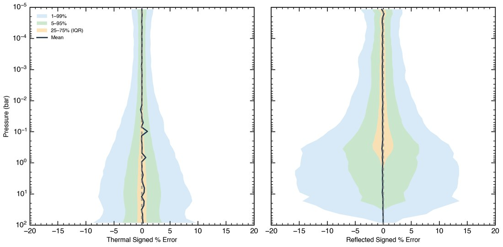

arXiv preprint · 2025
Accelerating radiative transfer with transformers
A transformer-based emulator reproduces layer-by-layer radiative fluxes to sub-percent accuracy while running orders of magnitude faster than conventional codes. Large grids of atmospheric models become affordable.
Read the paper